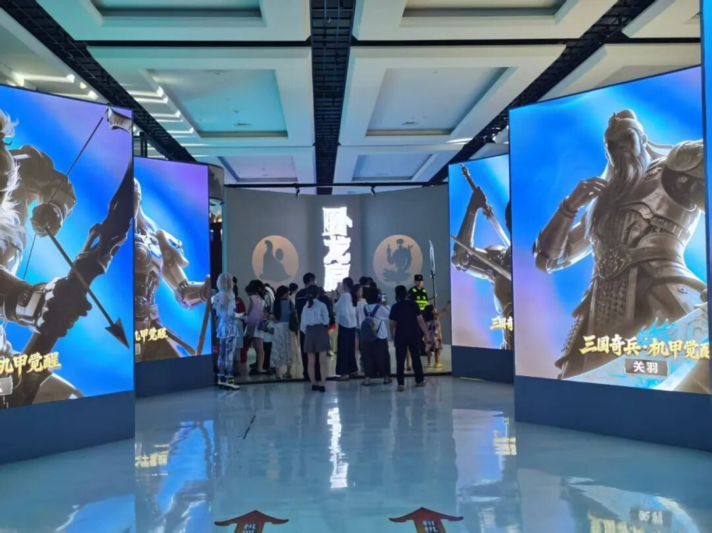
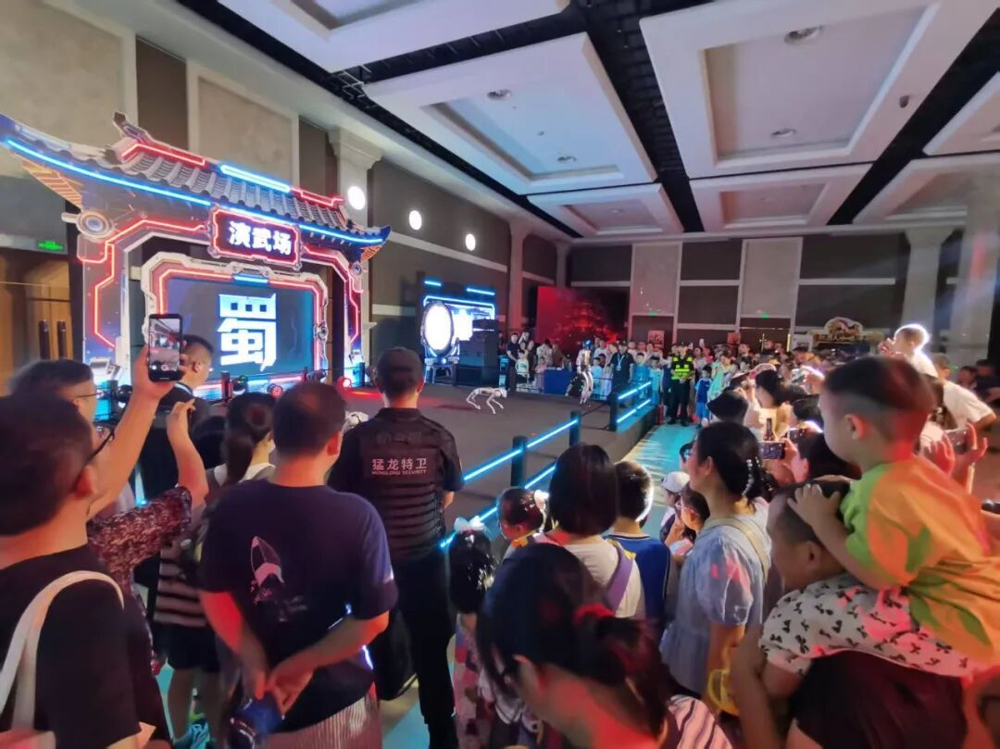
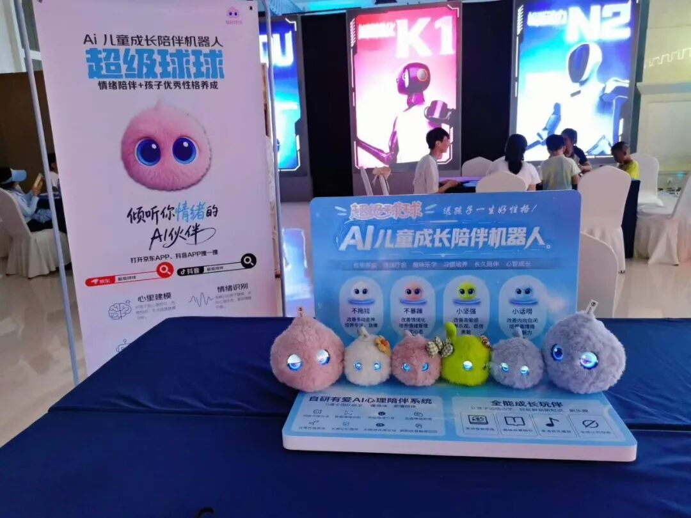
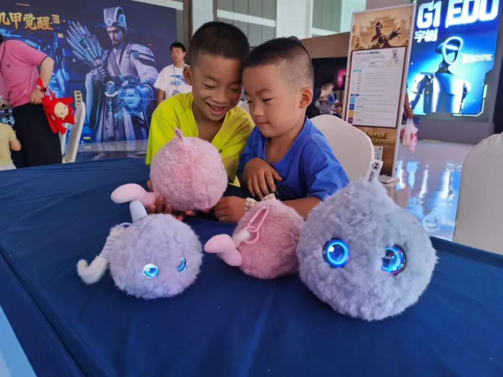
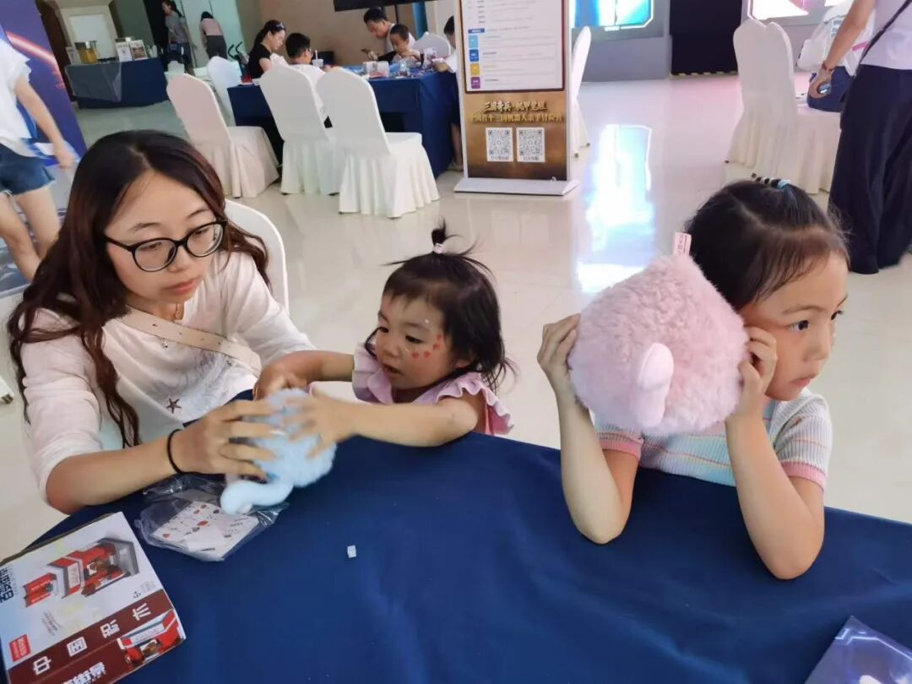
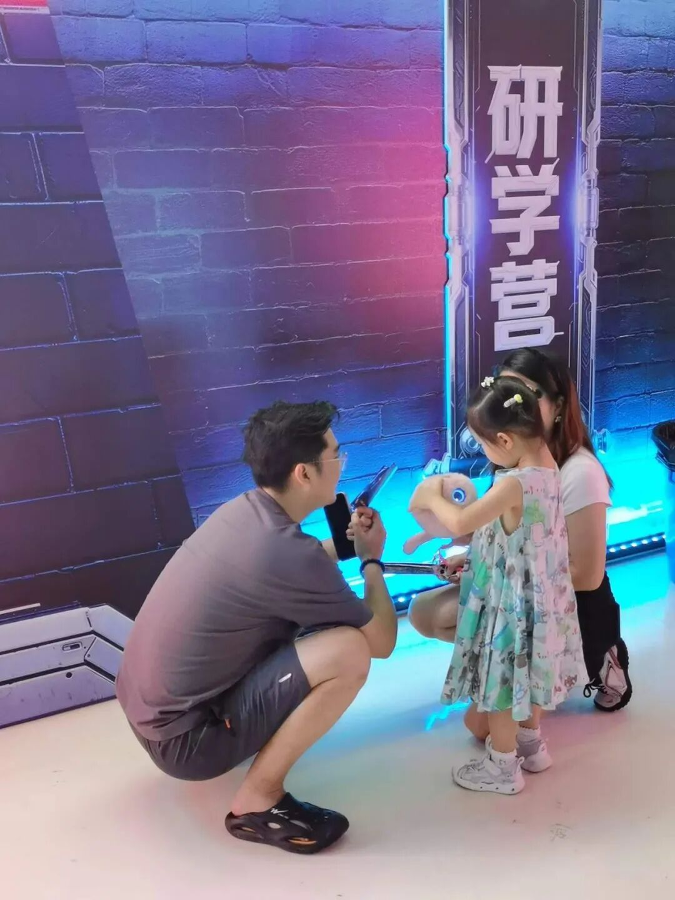

7月23日至8月31日，“三国奇兵・机甲觉醒”全国首个三国主题亲子冒险将在成都传媒・新东方会展中心（成都非遗博览园）重磅登场。活动以“三国文化 + 机器人科技”为核心，打造集沉浸式剧情、真机互动、研学教育、国风打卡于一体的暑期亲子嘉年华，为西南地区的家庭客群提供一个兼具文化厚度与科技亮点的室内遛娃新选择。


走进活动现场，赛博国风的空间设计氛围感拉满。巨型三国机甲主题布景、炫酷霓虹通道，一秒穿越至科技感十足的三国世界。演武场内四足机器人轮番展演，吸引大批大小朋友驻足围观，感受硬核机器人科技的独特魅力。

本次嘉年华，超级球球AI儿童成长陪伴机器人受邀入驻展区，成为现场人气打卡点位。多款不同性格的超级球球整齐亮相，软萌治愈的毛绒外观、智能情绪交互功能，迅速俘获到场小朋友的喜爱。

超级球球是专注儿童情绪成长的AI陪伴机器人，依托清华、北师大博士团队与儿童心理学专家联合打造的有爱AI心理专属模型。
它搭载智能情绪识别、深度共情对话、长期记忆、风险预警等核心能力，能够敏锐捕捉孩子情绪变化，耐心倾听烦恼、疏导负面情绪；无屏幕毛绒造型不伤视力，拥抱、触摸即可触发互动，还具备故事伴读、英语口语练习、睡前助眠、正向性格引导等丰富功能。超级球球不只是聊天玩伴，更是孩子安全的情绪树洞，持续陪伴孩子建立稳定健康的内心世界。


不少家长停下脚步，近距离了解这款专注儿童情绪成长的AI伙伴。相比于传统益智玩具，超级球球依托自研AI心理陪伴系统，可以倾听孩子情绪、疏导内心压力，助力良好性格养成，受到众多亲子家庭认可。

热血硬核的三国机甲科技，搭配温柔治愈的情感AI伙伴，让这场研学之旅拥有双重惊喜。
这个暑假，带上孩子奔赴这场国风与科技碰撞的亲子冒险！沉浸式三国剧情、机甲机器人展演、暖心AI超级球球等候大家前来打卡体验。
活动信息
活动名称：三国奇兵・机甲觉醒
活动时间：7月23日—8月31日
活动地点：成都传媒・新东方会展中心（成都非遗博览园）